## system structure ## **operating systems** ### csci 3411 ### Prof. **Sibin Mohan** <br> _<font size="5"> acknowledgments: some content modified from Silberschatz et al. and West</font>_ --- ## system structure --- ## system structure how are the different parts of a system _separated_? --- ## system structure how are the different parts of a system _separated_? 1. **why** separate them? --- ## system structure how are the different parts of a system _separated_? 1. **why** separate them? 2. how do they **communicate**? --- ### system structure | **the tools** how does a system use... --- ### system structure | **the tools** how does a system use... - **dual mode** → <scb>user / kernel</scb> --- ### system structure | **the tools** how does a system use... - **dual mode** → <scb>user / kernel</scb> - **virtual address spaces** --- ### system structure | **implications** what does the _structure_ affect? | property | | |----------|--| | | | --- ### system structure | **implications** what does the _structure_ affect? | property | | |----------|--| | **security / reliability** | how _isolated_ & trustworthy? | --- ### system structure | **implications** what does the _structure_ affect? | property | | |----------|--| | **security / reliability** | how _isolated_ & trustworthy? | | **programming / maintainability** | how easy to build & change? | || --- ## MSDOS --- <!-- .slide: data-background-color="white" --> ### MSDOS | **no structure, no protection** <p>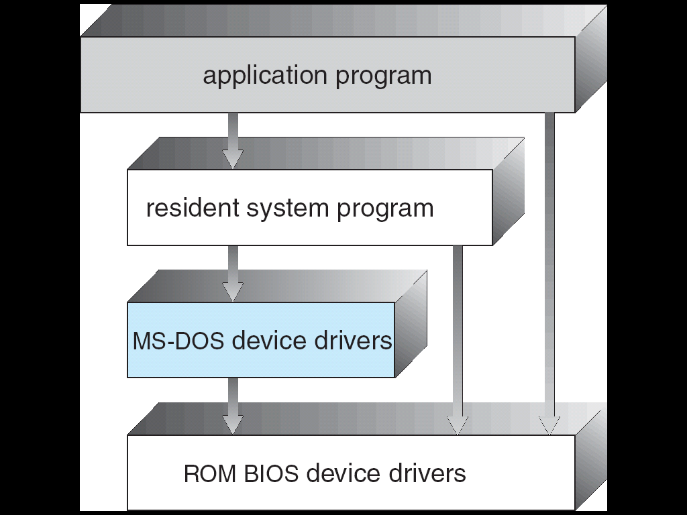</p> --- <!-- .slide: data-background-color="white" --> ### MSDOS | **no structure, no protection** anything can touch anything → **<font color="darkred">no isolation at all</font>** --- ## monolithic structure --- ## monolithic structure apps trap into **one big kernel** → _everything else_ lives inside it <p>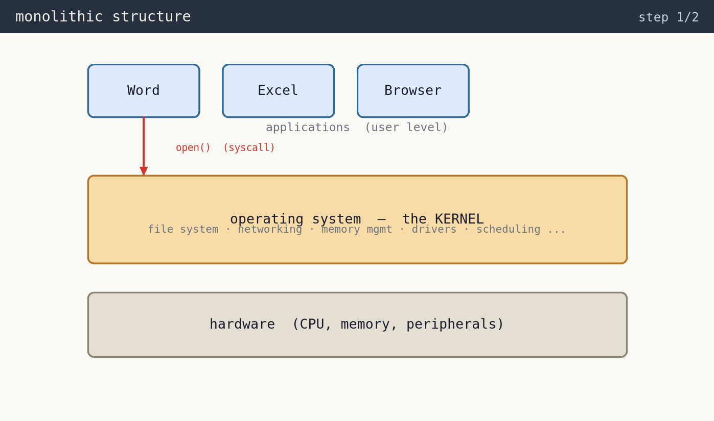</p> --- ## monolithic structure the kernel is the **most trusted** code → it _must_ work --- ## monolithic structure includes <sc>Unix</sc> / <sc>Windows</sc> / <sc>macOS</sc> --- ### monolithic structure | **the catch** kernels have grown to **tens of millions** of lines of code... <p>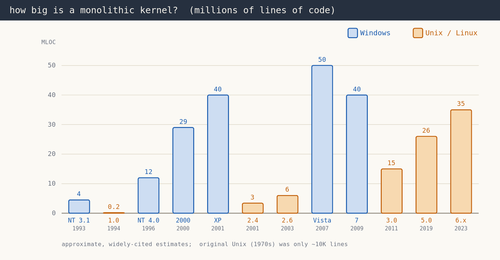</p> Note: - Windows & Unix/Linux both ballooned over the years; figures are widely-cited estimates. --- ### monolithic structure | **the catch** ~50 <scb>MLOC</scb> in the kernel → **all fully trusted** <p>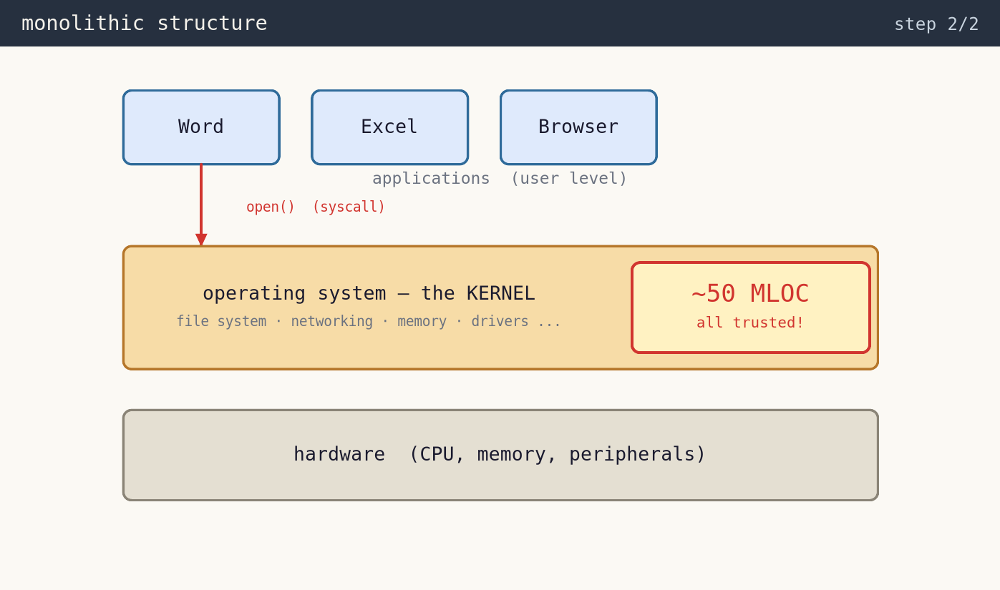</p> --- ### monolithic structure | **the catch** one bug → **<font color="darkred">the whole system crashes!</font>** Note: - when's the last time you got 50 million lines of code to work? --- advantage of monolithic kernel → **very fast**! --- move OS services **out** of the kernel --- move OS services **out** of the kernel → into user-level _servers_ --- ## microkernel structure <p>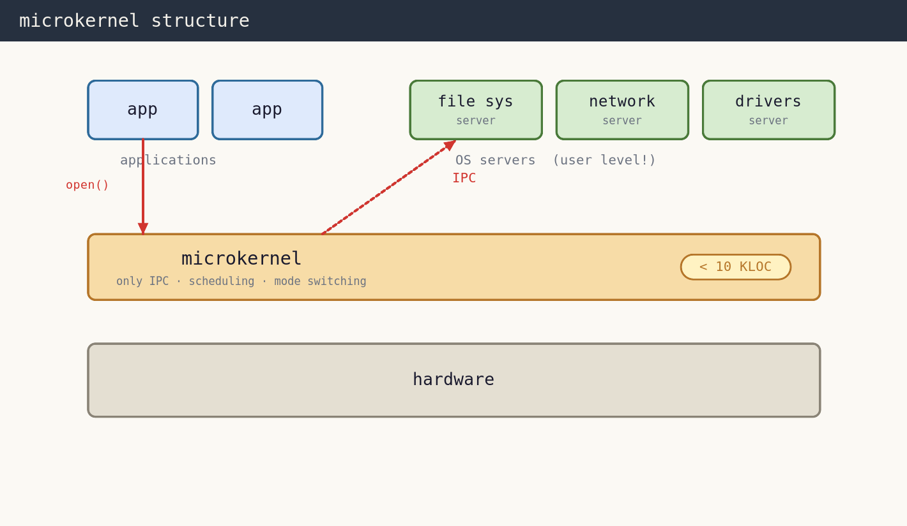</p> --- ## microkernel structure servers talk to each other via **inter-process communication** <scb>(IPC)</scb> --- ### microkernel | **benefits** --- ### microkernel | **benefits** - easier to **add** functionality --- ### microkernel | **benefits** - easier to **add** functionality - more **reliable** → _less code_ runs in kernel mode --- ### microkernel | **benefits** - easier to **add** functionality - more **reliable** → _less code_ runs in kernel mode - more **secure** --- ### microkernel | **benefits** - easier to **add** functionality - more **reliable** → _less code_ runs in kernel mode - more **secure** <br> ...so what are the **downsides**? _why?_ --- ### microkernel IPC --- ### microkernel IPC what _actually_ happens when application calls <scb>write()</scb>? --- ### microkernel IPC - application just calls <scb>write()</scb> - file system → **separate process** --- ### microkernel IPC - application just calls <scb>write()</scb> - file system → **separate process** <p>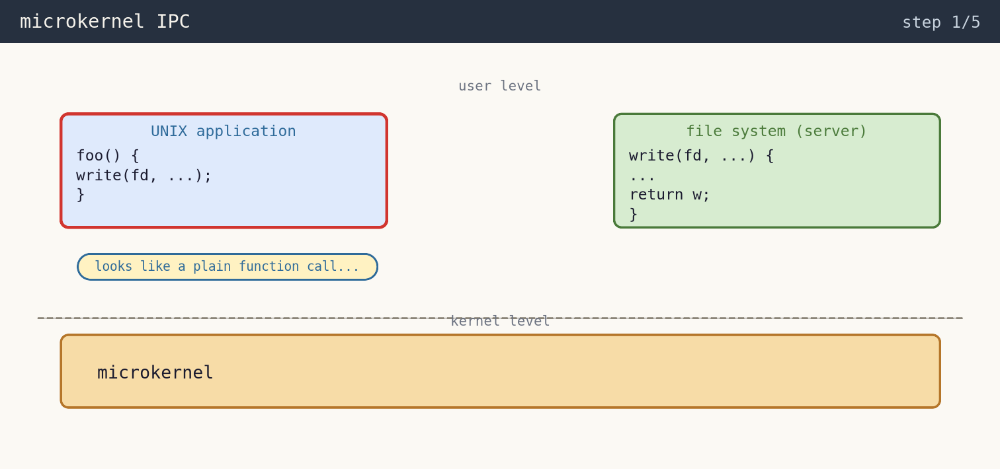</p> --- ### microkernel IPC **trap** into the microkernel → <scb>ecall</scb> <p>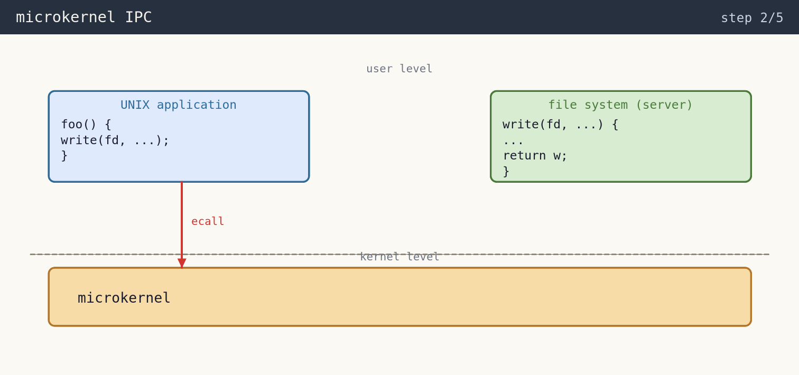</p> --- ### microkernel IPC - switch address space <br> <scb>app → kernel → FS</scb> - "return" into the server (<scb>sret</scb>) <p>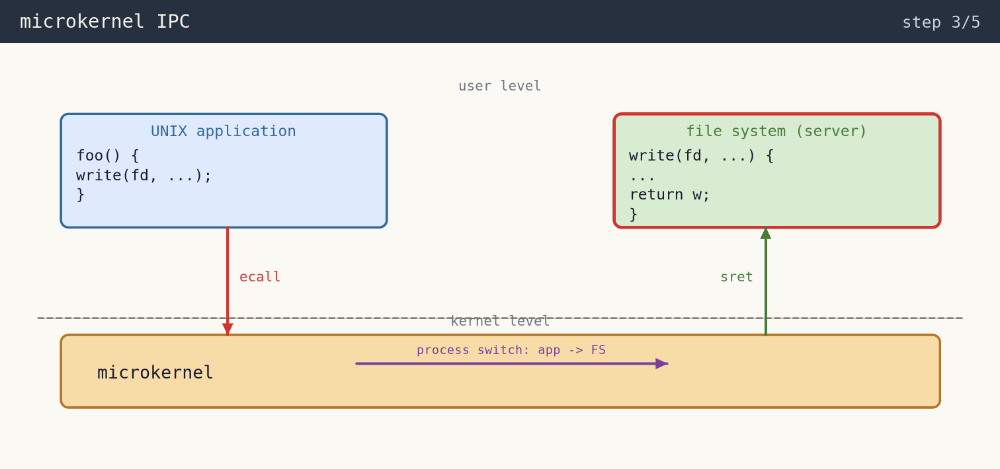</p> --- ### microkernel IPC the server replies → traps _back_ into the kernel (<scb>ecall</scb>) <p>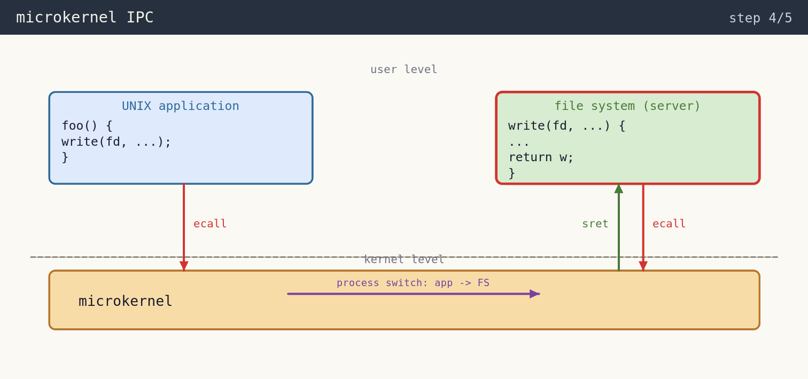</p> --- ### microkernel IPC ...and switch back into application (<scb>sret</scb>) <p>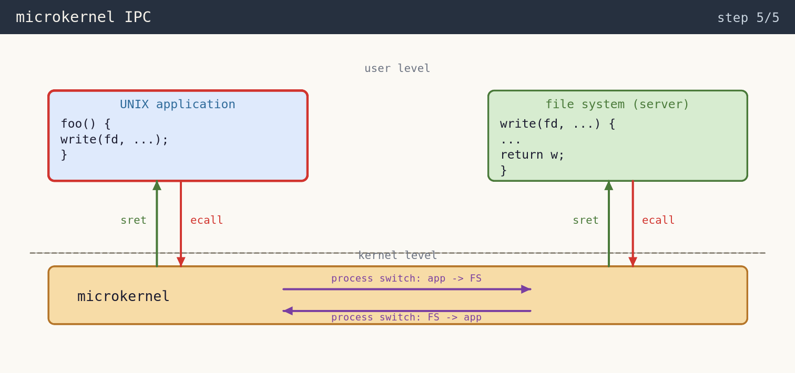</p> --- ### microkernel IPC | **costs** one IPC = $2 \times \texttt{ecall} + 2 \times \texttt{sret} + 2 \times \texttt{process switch}$ --- ### microkernel IPC | **costs** one IPC = $2 \times \texttt{ecall} + 2 \times \texttt{sret} + 2 \times \text{process switch}$ - <scb>2x</scb> system call - <scb>2x</scb> process switch - <scb>2x</scb> kernel code path for IPC --- ### microkernel IPC | **costs** one IPC = $2 \times \texttt{ecall} + 2 \times \texttt{sret} + 2 \times \text{process switch}$ - <scb>2x</scb> system call - <scb>2x</scb> process switch - <scb>2x</scb> kernel code path for IPC ||| |----|-----| | linux <scb>syscall</scb> | $\approx$ <scb>300</scb> cycles | | microkernel <scb>ipc</scb> <br> (heavily optimized) | $\approx$ <scb>830</scb> cycles | || --- ### microkernel IPC | **costs** one IPC = $2 \times \texttt{ecall} + 2 \times \texttt{sret} + 2 \times \text{process switch}$ - <scb>2x</scb> system call - <scb>2x</scb> process switch - <scb>2x</scb> kernel code path for IPC ||| |----|-----| | linux <scb>syscall</scb> | $\approx$ <scb>300</scb> cycles | | microkernel <scb>ipc</scb> <br> (heavily optimized) | $\approx$ <scb>830</scb> cycles | || <center><div class="center" data-id="box" style="height: 75px; width: 450px; background: orange;"> <b>IPC is not free!</b> </div></center> Note: - this per-message cost is the classic downside of microkernels. --- ## virtual machines --- ## virtual machines do you know what these are? --- ## virtual machines do you know what these are? what is the **structure** of a VM? --- ### virtual machines | **the idea** --- ### virtual machines | **the idea** - a virtual machine **host** (the kernel) --- ### virtual machines | **the idea** - a virtual machine **host** (the kernel) - provides an **interface** <br> **identical** to bare hardware --- ### virtual machines | **the idea** - a virtual machine **host** (the kernel) - provides an interface <br> **identical** to bare hardware - other **guest kernels** → **user mode** --- ### virtual machines | **the idea** - a virtual machine **host** (the kernel) - provides an interface <br> **identical** to bare hardware - other **guest kernels** → **user mode** - API for a VM <br> → **<font color="darkred">copy of real machine!</font>** --- recall this → one OS directly on hardware... <p>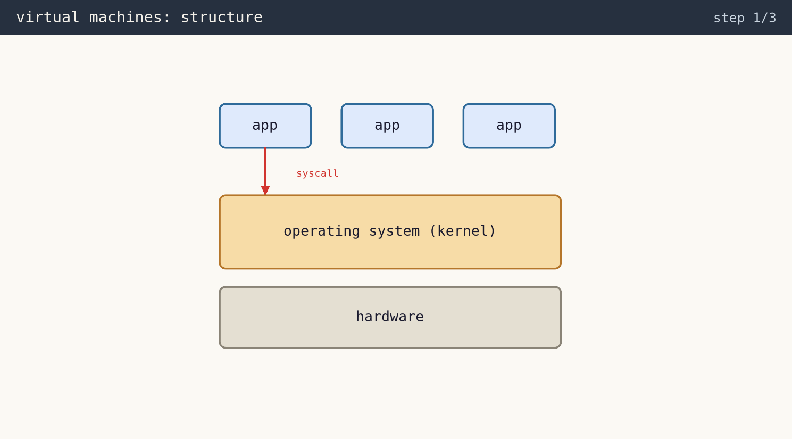</p> --- |single os design | vm-based design| |-----------------|----------------| |one OS directly on hardware | multiple "guests" | ||<p>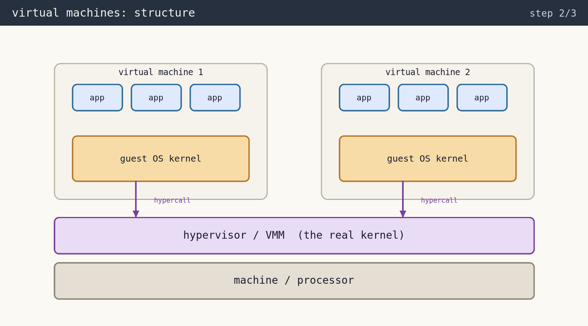</p>| || --- ### virtual machines | **structure** **VMM** gives each guest → an interface that looks like bare hardware --- ### virtual machines | **structure** - applications → guest kernel via <scb>syscall</scb> --- ### virtual machines | **structure** - applications → guest kernel via <scb>syscall</scb> - guest kernel → VMM via <scb>hypercall</scb> Note: - this is what your installation looks like. --- ### virtual machine | **implementation** --- ### virtual machine | **implementation** <div class="multicolumn" style="display: grid; grid-template-columns: 55% 45%; gap: 20px; align-items: center;"> <div> - normal <scb>syscall</scb> inside VM - guest kernel uses <scb>hypercalls</scb> </div> <div> <p>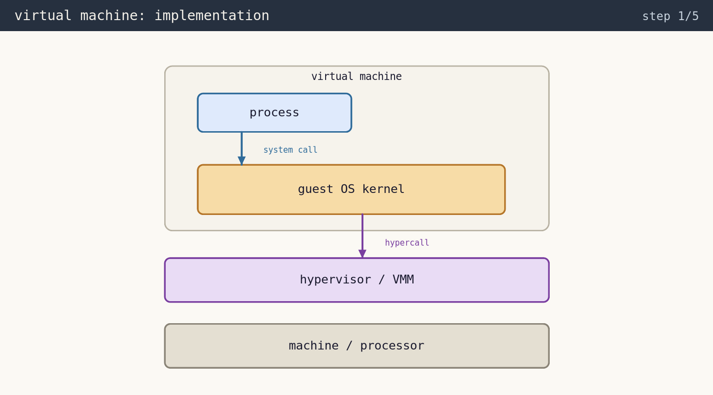</p> </div> </div> Note: - VM system call? interrupt for a VM? how do these work? --- ### virtual machine | **implementation** <div class="multicolumn" style="display: grid; grid-template-columns: 55% 45%; gap: 20px; align-items: center;"> <div> - normal <scb>syscall</scb> inside VM - guest kernel uses <scb>hypercalls</scb> - HW keeps **two** mode bits - <scb>VM-user / VM-kernel</scb> - <scb>user / kernel</scb> </div> <div> <p>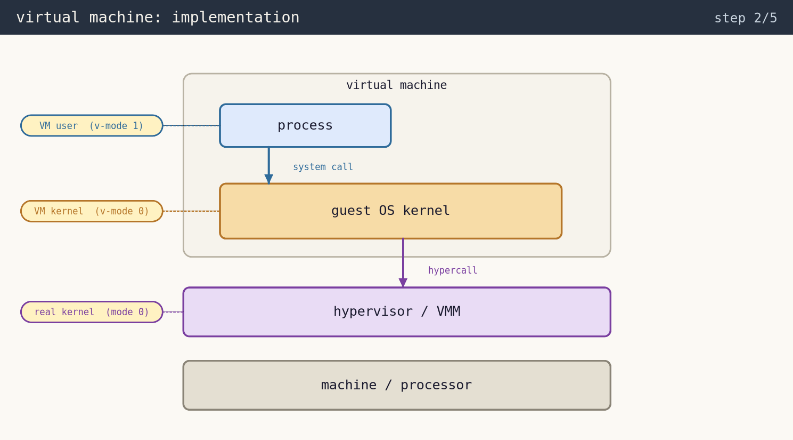</p> </div> </div> --- what about **interrupts**? who handles them? --- ### virtual machine | **interrupts** <div class="multicolumn" style="display: grid; grid-template-columns: 55% 45%; gap: 20px; align-items: center;"> <div> - interrupts arrive at → **real machine** - **not** the guest </div> <div> </div> </div> --- ### virtual machine | **interrupts** <div class="multicolumn" style="display: grid; grid-template-columns: 55% 45%; gap: 20px; align-items: center;"> <div> - interrupts arrive at → **real machine** - **not** the guest - interrupt → **traps to VMM** - real <scb>mode-0</scb> kernel </div> <div> <p>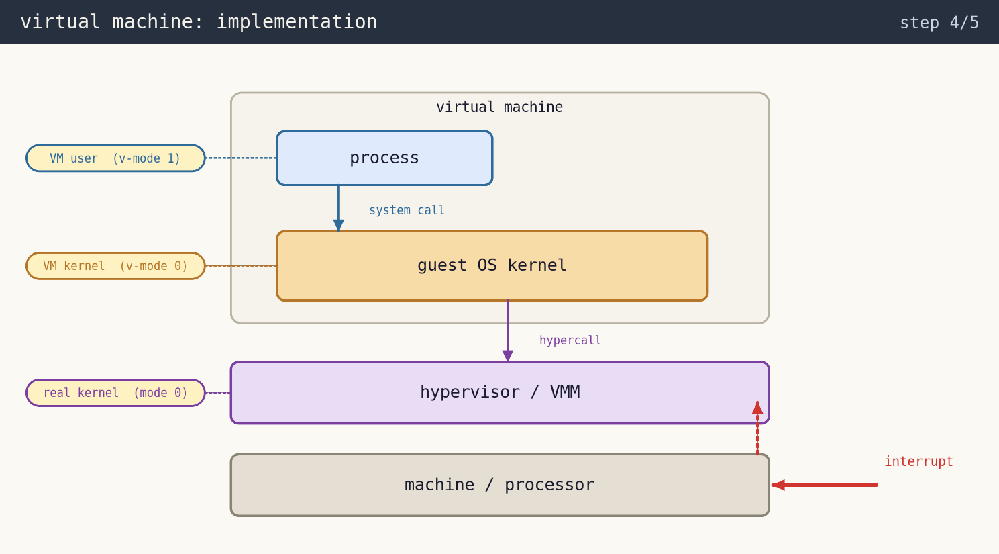</p> </div> </div> --- ### virtual machine | **interrupts** <div class="multicolumn" style="display: grid; grid-template-columns: 55% 45%; gap: 20px; align-items: center;"> <div> - interrupts arrive at → **real machine** - **not** the guest - interrupt → **traps to VMM** - real <scb>mode-0</scb> kernel - VMM "**vectors**"(passes) interrupt - **up** into the virtual machine </div> <div> <p>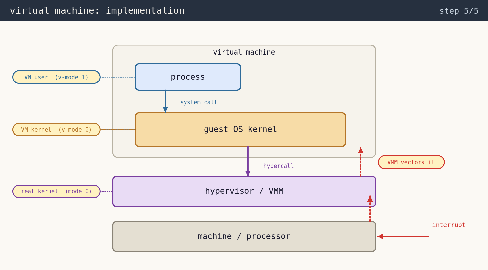</p> </div> </div> --- ### virtual machine | **interrupts** --- ### virtual machines | **benefits** --- ### virtual machines | **benefits** **multiple** operating systems **share** same hardware --- ### virtual machines | **benefits** **multiple** operating systems **share** same hardware | feature | description | | --- | --- | | legacy support | run existing code + **isolation** | --- ### virtual machines | **benefits** **multiple** operating systems **share** same hardware | feature | description | | --- | --- | | legacy support | run existing code + **isolation** | | consolidation | **many low-use systems** onto fewer busy ones | --- ### virtual machines | **benefits** **multiple** operating systems **share** same hardware | feature | description | | --- | --- | | legacy support | run existing code + **isolation** | | consolidation | **many low-use systems** onto fewer busy ones | | good security | "tenants" don't **trust** each other <br> **protected** from each other | --- ### virtual machines | **benefits** **multiple** operating systems **share** same hardware | feature | description | | --- | --- | | legacy support | run existing code + **isolation** | | consolidation | **many low-use systems** onto fewer busy ones | | good security | "tenants" don't **trust** each other <br> **protected** from each other | | coordination | some file **sharing** <br> communicate via **networking** | || --- ### VMs vs. microkernels --- ### VMs vs. microkernels - is either a **generalization** of the other? --- ### VMs vs. microkernels - is either a **generalization** of the other? - why are **microkernels** better? --- ### VMs vs. microkernels - is either a **generalization** of the other? - why are **microkernels** better? - why are **VMs** better? --- ### VMs vs. microkernels - is either a **generalization** of the other? - why are **microkernels** better? - why are **VMs** better? - which is more commonly used? **where?** _why?_ --- ## containers --- ## containers <br> - what are these? - what is their **structure**? --- ## containers - what are these? - what is their **structure**? <br> <br> examples: <sc>docker</sc>, <sc>kubernetes</sc>, <sc>podman</sc> --- ### containers - fundamental technique → **namespace separation** --- ### containers - fundamental technique → **namespace separation** <p>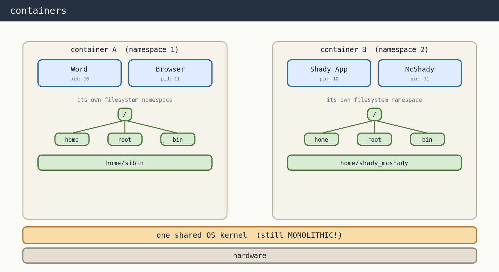</p> --- ### containers - fundamental technique → **namespace separation** structure → **<font color="darkred">still monolithic!</font>** --- ### containers - same pids (<scb>10</scb>, <scb>11</scb>) in each <br> --- ### containers - same pids (<scb>10</scb>, <scb>11</scb>) in each - isolated by **namespace separation** --- ### container trade-offs --- ### container trade-offs - **reproducible** dev & production environments --- ### container trade-offs - **reproducible** dev & production environments - don't install → _"an application"_ - install → _"an application **and all its dependencies**"_ --- ### container trade-offs - **reproducible** dev & production environments - don't install → _"an application"_ - install → _"an application **and all its dependencies**"_ - kernel bug → **full system compromise** - similar to a monolithic kernel